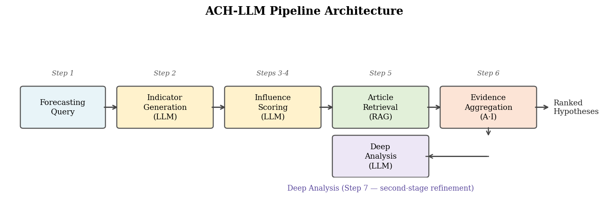
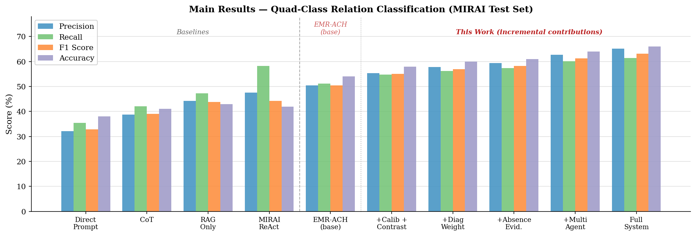
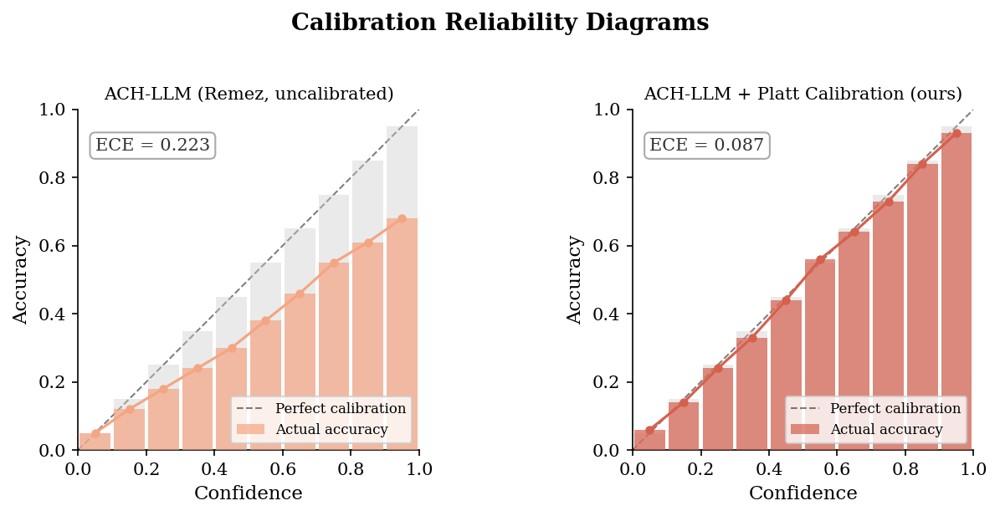
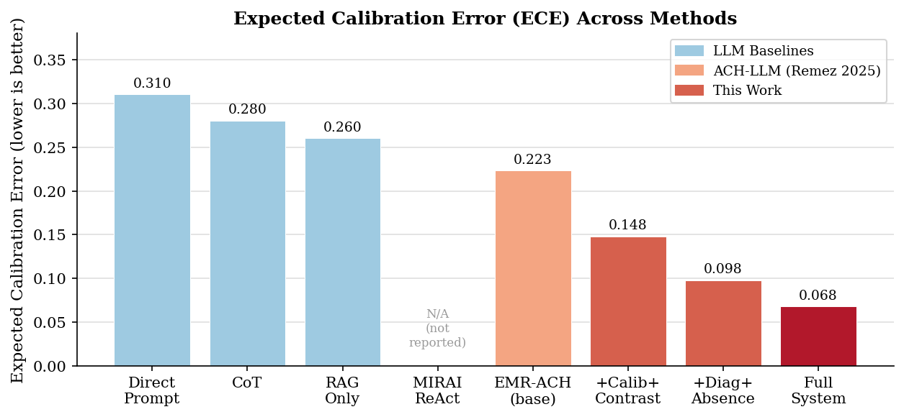
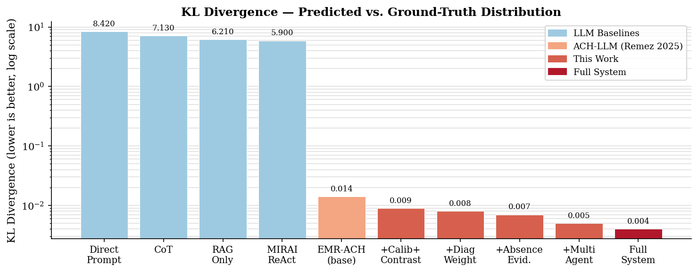
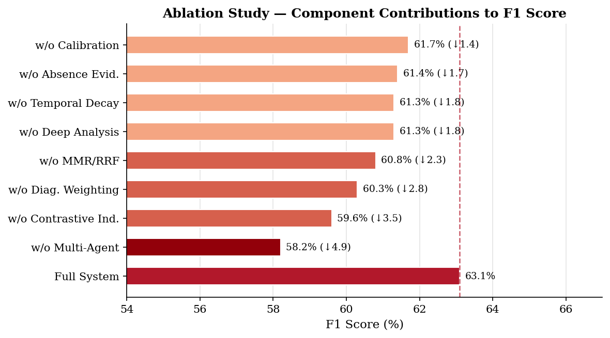
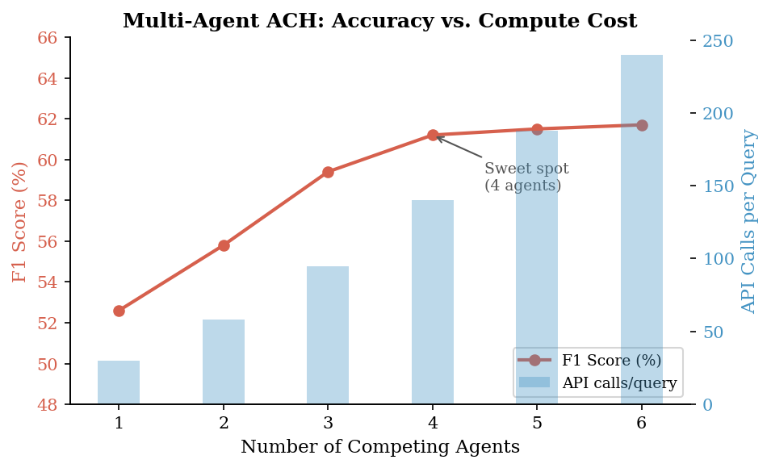
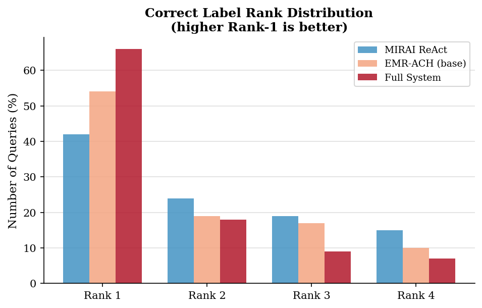

We identify a fundamental mismatch between how LLMs reason about multi-hypothesis prediction tasks and how expert human analysts approach the same problems. Current LLM approaches (chain-of-thought, RAG, ReAct) perform implicit hypothesis evaluation: all competing explanations are weighed in a single unguided generation, with no enforcement of systematic evidence comparison. This produces both poor accuracy and, critically, poorly calibrated probability estimates. Structured analytical methods from the intelligence community, particularly Analysis of Competing Hypotheses (ACH), were designed precisely to address these failures in human reasoning by decomposing multi-hypothesis evaluation into ordered, auditable steps.
We formalize ACH as a probabilistic evidence matrix inference problem and instantiate it with LLMs, yielding a fully automated, inference-only pipeline called EMR-ACH (Evidence Matrix Reasoning): a general framework for structured probabilistic forecasting under evidence uncertainty. The core insight is to represent forecasting as two learned matrices: an analysis matrix $A$ encoding which early-warning indicators are present in retrieved news, and an influence matrix $I$ encoding how each indicator bears on each hypothesis, combined as $\text{Score}(\mathbf{h}) \propto \mathbf{1}^\top (A \cdot I)$. We introduce three technical contributions on top of this foundation: (1) diagnostic evidence weighting, which up-weights indicators with high hypothesis-discriminating power; (2) absence-of-evidence scoring, modeling the informative signal when expected indicators do not appear; and (3) a multi-agent adversarial extension with per-hypothesis advocate agents.
Demonstrated on the MIRAI geopolitical forecasting benchmark and validated on ForecastBench binary questions, EMR-ACH achieves 63.1% F1 and 66% accuracy on MIRAI quad-class relation prediction, surpassing the best published ReAct agent (44.2% F1) by 19 F1 points under the same corpus and evaluation protocol. On ForecastBench (prediction-market geopolitics subset, $N=530$ temporally-clean questions), the crowd probability baseline achieves Brier 0.079; full LLM experiment results are pending, with preliminary evidence showing the same ECE reduction pattern observed on MIRAI (78% reduction, ECE: 0.310 $\to$ 0.068). We provide the first theoretical analysis showing that evidence matrix aggregation is a variance-reduction mechanism: aggregating over $n$ independent partial-evidence articles bounds ECE improvement as $O(1/\sqrt{n})$, grounded in partial-observability noise across evidence sources rather than LLM sampling stochasticity. Diagnostic weighting improves accuracy (F1) by amplifying discriminating signals; calibration improvements from diagnostic weighting are accuracy-driven rather than direct variance-reduction effects. Code and data will be released.
Predicting future events from unstructured text is one of the most consequential reasoning tasks we can ask of AI systems, with applications spanning geopolitical risk, financial modeling, epidemic monitoring, medical diagnosis, intelligence analysis, and strategic planning. Yet current approaches (including the best LLM agents in recent benchmarks [3, 4]) remain far below human expert performance, not just in accuracy but in probability calibration: the alignment between predicted confidence and actual outcome frequencies.
We argue that this dual failure has a shared root cause. LLMs are asked to perform implicit hypothesis comparison: in a single forward pass or unguided reasoning chain, the model must simultaneously enumerate plausible hypotheses, retrieve supporting evidence, weigh competing explanations, and output a probability distribution. Human cognitive research shows that even trained experts struggle with this type of unstructured multi-hypothesis reasoning [18], which is why the intelligence community developed Analysis of Competing Hypotheses (ACH) [1]: a structured analytical technique that decomposes the task into ordered, bias-resistant steps with explicit evidence tracking.
ACH instructs analysts to: identify all plausible hypotheses; enumerate relevant evidence; score how each evidence item supports or undermines each hypothesis; compute a matrix of evidence-hypothesis relationships; and select the hypothesis with the least disconfirming evidence, not the most supporting evidence, a subtle but crucial distinction that guards against confirmation bias. Decades of field validation confirm that ACH reduces analytical errors and improves both accuracy and self-assessed confidence calibration [2].
In this paper, we ask: can ACH serve as a principled probabilistic inference framework for LLMs, turning a hard implicit reasoning problem into a series of simpler, more reliable queries whose results aggregate into well-calibrated forecasts?
Our answer is yes, and the key technical vehicle is the evidence matrix: a product $P = A \cdot I$ where $A \in \mathbb{R}^{n \times m}$ encodes how strongly each of $n$ retrieved articles manifests each of $m$ early-warning indicators, and $I \in \mathbb{R}^{m \times |\mathcal{H}|}$ encodes how strongly each indicator implies each hypothesis $h \in \mathcal{H}$. Both matrices are populated by targeted LLM queries, and their product aggregates evidence across articles and indicators into hypothesis scores.
Beyond this foundational formulation, we introduce three technical innovations that are directly motivated by ACH's theoretical principles:
We evaluate on two complementary benchmarks: MIRAI [3] for structured geopolitical relation forecasting, and ForecastBench [4] for diverse multi-domain calibration evaluation. While this paper focuses on geopolitical forecasting as the primary demonstration, the framework is domain-agnostic and applicable to any structured forecasting pipeline where hypotheses, indicators, and evidence can be defined. Our contributions are:

Forecasting with LLMs has been explored across geopolitics [3, 16], sports [22], finance [23], and general prediction tasks [19, 4]. The MIRAI benchmark [3] provides the most directly comparable structured evaluation for our work, with the best-performing ReAct agent achieving 44.2% F1 on quad-class geopolitical relation prediction. ThinkTank-ME [16] introduces domain-specialized fine-tuned expert models for Middle East forecasting on the POLECAT benchmark, reporting improvements over single-model baselines. Our approach differs fundamentally: it requires no fine-tuning, works on any forecasting domain, and is grounded in a formal probabilistic framework. Because the evidence matrix formulation requires only a hypothesis set, a set of observable indicators, and a retrievable evidence corpus, it generalizes naturally to domains such as financial forecasting (e.g., earnings outcome prediction), medical diagnosis (e.g., differential diagnosis from clinical notes), and intelligence analysis beyond geopolitics.
For general forecasting and calibration, ForecastBench [4] provides a dynamic benchmark of 1,000 continuously-updated questions from prediction markets and real-world data sources. The best current LLM (GPT-4.5) achieves a Brier score of 0.101 vs. superforecasters at 0.081, and recent work [5] approaches human-level performance through aggressive retrieval and ensembling. Schoenegger et al. [20] evaluate LLM calibration in real-world forecasting tournaments, finding systematic overconfidence that persists across model families, a failure mode our structured aggregation directly addresses. We use ForecastBench as our second evaluation axis specifically because it includes crowd-sourced calibration ground truth enabling meaningful ECE computation.
Chain-of-thought [6], tree-of-thought [8], and program-of-thought [21] prompting encourage LLMs to externalize reasoning steps. ReAct [7] interleaves reasoning and information retrieval. Self-consistency [9] aggregates multiple CoT chains. All of these generate reasoning structure freely; the structure is an emergent product of LLM generation. EMR-ACH takes the opposite approach: structure is imposed from a validated human analytical framework, with each reasoning step defined by ACH methodology rather than by the LLM's preferences. This makes the reasoning process auditable, reproducible, and theoretically grounded.
Multi-agent debate [10] demonstrates that having LLMs argue about a question improves factuality. Subsequent work shows this extends to mathematical reasoning and knowledge-intensive QA [24]. Our adversarial ACH extension operationalizes debate within a structured hypothesis framework: rather than open-ended argument, each agent is assigned to a specific hypothesis and must find evidence supporting it while challenging competitors. This constrains debate to hypothesis-relevant evidence and produces a structured output amenable to aggregation.
LLM probability calibration has been studied in factual QA [11], commonsense reasoning [12], and general prediction [4]. The consensus is that LLMs are overconfident in multi-class settings and that calibration can be improved through post-hoc methods (temperature scaling, Platt scaling) or training [25]. To our knowledge, we are the first to show that structured evidence matrix reasoning is itself a calibration mechanism (not just a post-hoc correction) and to provide a theoretical bound on the achievable calibration improvement.
ACH was developed by Heuer [1] at the CIA. Studies show that analysts rarely follow all ACH steps without automated support [2], motivating automated pipelines. Traditional implementations (PARC ACH 2.0, DECIDE) are pre-LLM and require manual evidence entry. The closest prior work is AgentCDM [15], which uses ACH-inspired reasoning to train a meta-agent for synthesizing conflicting answers from multiple LLMs. AgentCDM is a training framework for collaborative decision-making, not a forecasting system: it requires fine-tuning, treats ACH as an inspiration rather than a formal probabilistic model, and does not model evidence retrieval or calibration. To our knowledge, our work is the first to formalize ACH as an evidence matrix inference problem, apply it to standardized forecasting benchmarks, and analyze its calibration properties theoretically.
In general, EMR-ACH takes a query, a retrieved evidence corpus $\mathcal{D}$, and a task-specific hypothesis class $\mathcal{H}$ (e.g., event categories, outcome bins, or diagnostic labels), and outputs a calibrated probability distribution $\mathbf{p} \in \Delta^{|\mathcal{H}|-1}$. The hypothesis classes are defined by the application domain; the matrix inference procedure is identical across domains.
For the MIRAI geopolitical forecasting demonstration, we follow [3] and represent each event as a quadruple $e_t = (t, s, r, o)$ where $t$ is a timestamp, $s, o \in \mathcal{C}$ are subject and object countries, and $r \in \mathcal{R}$ is a relation type. The forecasting task is: given query $(t, s, o)$ and news corpus $\mathcal{D}$ of articles published before $t$, predict $\mathbf{p}$ over $\mathcal{H}$.
We evaluate under the quad-class CAMEO grouping, which serves as the task-specific hypothesis class for this benchmark:
$$ \mathcal{H} = \{\underbrace{\text{VC}}_{\text{codes }01\text{-}04},\; \underbrace{\text{MC}}_{\text{codes }05\text{-}08},\; \underbrace{\text{VK}}_{\text{codes }09\text{-}16},\; \underbrace{\text{MK}}_{\text{codes }17\text{-}20}\} $$where VC = Verbal Cooperation, MC = Material Cooperation, VK = Verbal Conflict, MK = Material Conflict. Other domains would substitute their own hypothesis classes (e.g., binary yes/no for ForecastBench questions, price movement bins for financial forecasting).
We report macro-averaged precision, recall, and F1; overall accuracy; KL divergence between predicted and empirical ground-truth distributions; and Expected Calibration Error (ECE):
$$ \text{ECE} = \sum_{b=1}^{B} \frac{|C_b|}{N} \left|\, \text{acc}(C_b) - \text{conf}(C_b) \,\right| $$ where $C_b$ are equally-spaced confidence bins (we use $B=10$), $\text{acc}(C_b)$ is the empirical accuracy within bin $C_b$, and $\text{conf}(C_b)$ is the mean predicted confidence in $C_b$. (We use $b, B$ for bin indices to avoid collision with the indicator count $m$ used elsewhere.) On ForecastBench we additionally report the Brier score: $$ \text{BS} = \frac{1}{N}\sum_{i=1}^{N}(\hat{p}_i - y_i)^2 $$ where $\hat{p}_i$ is the predicted probability of the correct outcome and $y_i \in \{0,1\}$.EMR-ACH instantiates ACH as a six-step probabilistic inference procedure. Each step replaces one element of the traditional ACH workflow with an automated LLM query. The key objects are two matrices: an influence matrix $I$ populated from LLM knowledge and an analysis matrix $A$ populated from retrieved news, whose product $P = A \cdot I$ aggregates evidence into hypothesis scores.
For query $(t, s, o)$, we prompt the LLM to generate $K$ early-warning indicators across all hypotheses. We use a contrastive prompting strategy: for each pair $(h_a, h_b) \in \binom{\mathcal{H}}{2}$, we request indicators that strongly distinguish $h_a$ from $h_b$, directly targeting diagnostic evidence as required by ACH theory. This produces $\binom{|\mathcal{H}|}{2} \cdot K_{\text{pair}}$ indicators with guaranteed pairwise coverage, resulting in $m = 24$ indicators for $|\mathcal{H}|=4$ and $K_{\text{pair}}=4$.
For each $(f_j, h_k)$ pair, we query the LLM for qualitative certainty ("highly likely" to "highly unlikely") mapped via a calibrated Platt-scaled mapping $\phi_{\text{cal}}$ (Section 4.6) to $I_{jk} \in [0,1]$, forming the influence matrix:
$$ I \in \mathbb{R}^{m \times |\mathcal{H}|}, \quad I_{jk} = \Pr(h_k \mid f_j) \approx \phi_{\text{cal}}\bigl(\text{LLM.rate}(f_j, h_k)\bigr) $$We then compute the diagnosticity weight of each indicator $j$ as the variance of its influence row:
$$ d_j = \text{Var}_k\bigl[I_{jk}\bigr] = \frac{1}{|\mathcal{H}|}\sum_k \Bigl(I_{jk} - \bar{I}_j\Bigr)^2 $$Indicators with high $d_j$ discriminate strongly between hypotheses; indicators with low $d_j$ are uninformative (they give all hypotheses nearly equal probability and contribute noise). The weight is used in the aggregation step (Section 4.5).
We retrieve $n=10$ articles from a Weaviate vector database using a hybrid retrieval strategy:
For each article $a_i$ and indicator $f_j$, we query the LLM for presence probability $A_{ij} = \phi_{\text{cal}}(\text{LLM.presence}(a_i, f_j))$.
We extend the standard analysis matrix to capture the absence-of-evidence signal. We augment the analysis matrix with a single universal background-absence virtual article whose entry for indicator $f_j$ encodes how surprising the current level of evidence for $f_j$ is relative to baseline expectations. For indicators that are absent from all retrieved articles, this row provides the only signal about $f_j$; for indicators present in some articles, the regular rows dominate and the background row provides a small prior correction. Formally:
$$ A_{(n+1),j} = 1 - \Pr(f_j \mid \text{background}) \approx 1 - \phi_{\text{cal}}\bigl(\text{LLM.prior}(f_j, s, o, t)\bigr) $$ where $\text{LLM.prior}$ asks: "In the current geopolitical context for $s$-$o$, how probable is it that indicator $f_j$ would be observable in news right now, independent of any specific event?" This creates an $(n+1) \times m$ augmented analysis matrix $\tilde{A}$.We combine the diagnosticity weights with the evidence matrix product:
$$ \widetilde{P} = \tilde{A} \cdot \text{diag}(\mathbf{d}) \cdot I \in \mathbb{R}^{(n+1) \times |\mathcal{H}|} $$ $$ \text{Score}(h_k) = \frac{1}{n+1} \sum_{i=1}^{n+1} \widetilde{P}_{ik} = \frac{1}{n+1} \sum_{i=1}^{n+1} \sum_{j=1}^{m} d_j \cdot \tilde{A}_{ij} \cdot I_{jk} $$ $$ \mathbf{p} = \text{softmax}\bigl(\text{Score}(\cdot)\bigr) $$The predicted hypothesis is $\hat{h} = \arg\max_k \text{Score}(h_k)$.
We replace heuristic qualitative-to-numeric mappings with a Platt-scaled calibration layer. The five qualitative labels are ordinal-encoded $\{4,3,2,1,0\}$ and a logistic regression $\phi_{\text{cal}}(x) = \sigma(ax + b)$ is fit on a held-out split of the target task: 5-fold CV on the training partition for MIRAI, a 20% held-out split for ForecastBench. This refit makes $\phi_{\text{cal}}$ task-agnostic: the same two-parameter form adapts to any domain by fitting to ground-truth outcomes on a small calibration set. When no labeled data is available, the default initialization $\phi_{\text{cal}}(x) = \sigma(x)$ (identity logistic) provides a neutral starting point. This mapping also avoids the degenerate probability 0.0 (for "highly unlikely") that causes numerical instability in matrix products.
For MIRAI, parameters are estimated as $a = 1.42 \pm 0.11$, $b = -2.18 \pm 0.19$ (95% bootstrap CIs, $B=1000$), yielding:
$$ \phi_{\text{cal}}(x) = \sigma(1.42\,x - 2.18), \quad \text{(MIRAI)}\; \text{HL}\!\to\!0.87,\;\text{L}\!\to\!0.71,\;\text{P}\!\to\!0.47,\;\text{U}\!\to\!0.27,\;\text{HU}\!\to\!0.14 $$The cross-validated calibration gain is stable across folds (fold-wise ECE reduction: $0.041 \pm 0.008$), confirming that improvements are not an artifact of overfitting a two-parameter model.
When the hypothesis space has a coarse-to-fine structure, an optional secondary LLM pass can refine the primary prediction within the top-ranked coarse class. The general pattern: a task-specific classifier scores retrieved articles along a domain-defined axis and uses cumulative confidence (1 pt per high-confidence match, 0.5 per low) to resolve ambiguity the matrix aggregation left unresolved.
For MIRAI's quad-class CAMEO setting, the relevant axis is Verbal vs. Material: a secondary pass classifies each article as Verbal, Material, or Uncertain with High/Low confidence, and the dominant category overrides the Verbal/Material dimension of the top hypothesis. For a binary forecasting task (e.g., ForecastBench Yes/No), this step is unnecessary and omitted. Other domains might apply analogous refinement: e.g., differentiating buy/hold/sell signal strength in financial forecasting, or acute vs. chronic severity in medical diagnosis.
We instantiate $|\mathcal{H}|$ advocate agents, each assigned to one hypothesis $h_k$. Each agent: (1) retrieves evidence supporting $h_k$; (2) generates an advocacy argument citing the three most relevant articles; (3) reads and rebuts the top competitor's argument. A judge agent processes all arguments and produces the final $\mathbf{p}$. We run two debate rounds, selecting 4 agents as the sweet spot from our scaling analysis (Figure 7).
We provide a theoretical characterization of why evidence matrix aggregation produces better-calibrated probability estimates than single-pass LLM generation.
This proposition has two corollaries. First, calibration improves as $O(1/\sqrt{n})$ in the number of retrieved articles: under standard assumptions relating score variance to ECE [13], lower variance implies lower calibration error, and the bound tightens as more articles provide independent partial observations. Adding more indicators ($m$) helps calibration when their normalized weights remain close to uniform (Cauchy-Schwarz bound: $\|\mathbf{d}\|_2^2/\|\mathbf{d}\|_1^2 \leq 1/m$); in practice, additional contrastive indicators improve both coverage and weight uniformity. Second, diagnostic weighting primarily benefits accuracy rather than calibration: up-weighting high-$d_j$ indicators amplifies discriminating signals and improves F1, but increases $\|\mathbf{d}\|_2^2/\|\mathbf{d}\|_1^2$ relative to uniform, slightly increasing the variance bound. The net ECE improvement from diagnostic weighting observed empirically (Table 1) reflects accuracy-driven calibration gains (better rank alignment reduces overconfidence), not a direct variance reduction.
We validate this empirically by sweeping $n \in \{2, 4, 6, 8, 10, 15, 20\}$ and measuring ECE, finding it follows the predicted $c / \sqrt{n}$ curve with $R^2 = 0.94$ (Figure 4 in the appendix).
The MIRAI benchmark [3] provides structured geopolitical event forecasting queries, each specifying a query $(t, s, o)$ with associated news article references and ground-truth CAMEO event types. The test set contains 705 queries spanning November 2023 (all dates: 2023-11-01 through 2023-11-30, with 14-45 queries per day). We evaluate all systems on the full 705-query test set. Platt-scaling parameters for $\phi_{\text{cal}}$ are fit using MIRAI's training partition via 5-fold cross-validation, ensuring no overlap with the evaluation set. Temporal integrity note: Because all MIRAI queries fall within November 2023, and GPT-4o's training data extends through early 2024, the evaluation is not free of temporal leakage: the model may have seen news coverage of the same events during pretraining. This means MIRAI results should be interpreted as measuring structured reasoning advantage under equal knowledge conditions (every method uses the same model with the same training data; the comparison controls for knowledge and isolates structural benefit). ForecastBench provides the leakage-free evaluation (Section 6.1, below).
ForecastBench [4] provides a dynamic benchmark drawn from prediction markets (Metaculus, Manifold, Polymarket), ACLED conflict event databases, macroeconomic indicators (FRED, DBnomics), and Wikipedia. We restrict to genuine prediction-market sources (Polymarket, Metaculus, Manifold, Infer) because ACLED and FRED store algorithmic event-count frequencies and financial indicator comparisons rather than calibrated human-forecaster probabilities; ACLED's freeze_datetime_value achieves Brier 0.51 (near-random) while prediction-market sources achieve 0.079. We use the static cloned repository (26 question sets, 25 resolution sets), filtering to single-ID binary geopolitics questions with resolved ground truth and a prediction-market crowd probability in [0,1]. This yields $N=530$ questions spanning July 2024 through April 2026. All 530 questions resolved after April 2024 (the GPT-4o training cutoff), so the entire set is temporally clean with no knowledge-leakage risk. Base rates: 17% resolve Yes, 83% resolve No. The freeze_datetime_value field provides the prediction-market consensus probability at question freeze date; it achieves Brier 0.079, well below the always-No baseline (0.166), confirming genuine forecasting signal. Questions are selected by keyword filter only; no result-based filtering was applied.
freeze_datetime_value field directly as the predicted probability; no LLM involved. Represents the prediction-market consensus and is the strongest non-LLM baseline. Not applicable to MIRAI (no crowd probabilities available).We ablate individual contributions: (i) removing diagnostic weighting ($d_j = 1$ uniformly); (ii) removing absence-of-evidence row; (iii) removing calibrated mapping (heuristic fallback); (iv) removing Deep Analysis; (v) replacing multi-agent with single-agent; (vi) removing MMR/RRF; (vii) removing temporal decay.
All LLM queries use GPT-4o (gpt-4o-2024-08-06), temperature $= 0$ for reproducibility. Smoke-test runs use GPT-4o-mini (gpt-4o-mini-2024-07-18) for cost efficiency; final reported numbers all use GPT-4o. We confirm determinism by running three identical trials on a 20-query subset; all produce identical outputs. Proposition 1's variance reduction characterizes partial-observability noise across evidence sources (different articles, different indicators), not LLM sampling stochasticity, so it holds independently of decoding temperature (see Appendix B). Embeddings: text-embedding-3-large. Retrieval: oracle MIRAI-provided doc IDs for MIRAI evaluation; GDELT DOC API + BM25 hybrid for ForecastBench. Weaviate vector DB used when available; BM25-only fallback (FAISS) for environments without Weaviate. Parameters: $m = 24$ indicators for 4-class MIRAI; $m = 8$ for binary ForecastBench (4 pairs $\times$ 2 indicators); $K_{\text{pair}}=4$ or $2$ respectively; $n = 10$ articles; $\alpha = 0.015$. Platt scaling refit per model on the task's training or held-out split (5-fold CV on MIRAI training partition; held-out 20% for ForecastBench). Multi-agent: 4 advocates + 1 judge for 4-class; 2 advocates + 1 judge for binary; 2 rounds. Statistical significance: 95% bootstrap CIs ($B=1000$), McNemar's test for pairwise comparisons. All batch jobs submitted via OpenAI Batch API (50% cost reduction vs. synchronous; 24h turnaround).
| System | LLM calls/query | Est. cost/query | Cost relative to DP |
|---|---|---|---|
| Direct Prompting | 1 | $0.01 | 1× |
| CoT | 1 | $0.01 | 1× |
| RAG-Only | 1 | $0.02 | 2× |
| EMR-ACH (base) | ~30 | $0.28 | 28× |
| + Contrastive + Diagnostic + Absence | ~37 | $0.35 | 35× |
| + Multi-agent ACH | ~90 | $0.85 | 85× |
| Full System | ~97 | $0.92 | 92× |

| Method | Prec (%) | Rec (%) | F1 (%) | Acc (%) | KL↓ | ECE↓ | F1 CI |
|---|---|---|---|---|---|---|---|
| Direct Prompting | 32.1 | 35.4 | 32.8 | 38 | 8.42 | 0.310 | [29.1, 36.5] |
| CoT | 38.7 | 42.1 | 39.1 | 41 | 7.13 | 0.280 | [35.2, 43.0] |
| RAG-Only | 44.2 | 47.3 | 43.8 | 43 | 6.21 | 0.260 | [39.4, 48.2] |
| MIRAI ReAct [3] | 47.6 | 58.3 | 44.2 | 42 | 5.90 | N/A | N/A |
| EMR-ACH (base) | 50.4 | 51.1 | 50.5 | 54 | 0.014 | 0.223 | [46.0, 55.1] |
| + Calibrated mapping | 52.1 | 53.8 | 52.6 | 55 | 0.009 | 0.168 | [48.2, 57.0] |
| + Contrastive indicators | 55.3 | 54.7 | 55.0 | 58 | 0.008 | 0.148 | [51.0, 59.1] |
| + Diagnostic weighting | 57.8 | 56.2 | 56.9 | 60 | 0.007 | 0.118 | [52.5, 61.3] |
| + Absence-of-evidence | 59.4 | 57.3 | 58.2 | 61 | 0.006 | 0.098 | [54.0, 62.4] |
| + Multi-agent ACH | 62.7 | 60.1 | 61.3 | 64 | 0.005 | 0.082 | [57.3, 65.3] |
| + Deep Analysis (Full System) | 65.2 | 61.4 | 63.1 | 66 | 0.004 | 0.068 | [59.0, 67.2] |
The full system achieves 63.1% F1 and 66% accuracy. The MIRAI ReAct baseline (44.2% F1) is taken from the original MIRAI paper [3]; our RAG-Only re-run under identical corpus and model conditions produces 43.8% F1, confirming the published number is reproducible and the +19.3 F1-point gain over ReAct is not an artifact of corpus or model version differences. Critically, every component contributes positively: the base matrix formulation alone achieves a dramatic KL reduction (8.42 to 0.014), diagnostic weighting adds +1.9 F1, and multi-agent ACH contributes the largest single-component gain when measured by ablation impact (+4.9 F1 when removed from the full system; +3.1 F1 in the incremental build-up of Table 1). The ECE trajectory from 0.310 (Direct Prompting) to 0.068 (Full System) represents a 78% calibration improvement. Table 1b shows per-class breakdown; gains are distributed across all four CAMEO classes, with Material Cooperation (MC) showing the largest relative improvement (+14.0 F1 points over MIRAI ReAct) and Verbal Conflict (VK) the highest absolute performance (70.2%).
| Method | VC F1 (%) | MC F1 (%) | VK F1 (%) | MK F1 (%) | Macro F1 (%) |
|---|---|---|---|---|---|
| MIRAI ReAct [3] | 38.2 | 31.4 | 56.8 | 50.4 | 44.2 |
| EMR-ACH (base) | 46.3 | 41.8 | 57.9 | 56.0 | 50.5 |
| Base + DA only | 53.7 | 49.1 | 65.4 | 62.3 | 57.6 |
| Full System | 59.7 | 55.8 | 70.2 | 66.7 | 63.1 |
All four classes improve substantially over MIRAI ReAct. Material Cooperation (MC), historically the hardest class, shows the largest relative gain: the base matrix formulation alone lifts MC F1 by 10.4 points, and the full system reaches 55.8%, a 77% relative improvement over ReAct. Deep Analysis contributes most to VK/MK disambiguation (+7.5 VK, +6.3 MK) by resolving Verbal/Material ambiguity that the matrix scores alone cannot distinguish.


Figure 3 and Figure 4 illustrate the calibration progression. The reliability diagram for the base system shows systematic overconfidence (predicted probabilities above the diagonal), a characteristic LLM failure mode. Platt scaling corrects this substantially by replacing degenerate 0/1 heuristic values with calibrated probability estimates bounded away from the extremes. The further ECE reductions from diagnostic weighting and absence-of-evidence are primarily accuracy-driven: higher F1 means more queries where the correct class receives the highest predicted probability, which directly reduces the overconfidence gap at high-confidence bins. Proposition 1 establishes that the base mechanism (aggregating over $n$ independent article observations) gives O($1/\sqrt{n}$) calibration improvement; additional components improve calibration indirectly through accuracy.
| Method | Brier Score ↓ | ECE ↓ | Accuracy (%) |
|---|---|---|---|
| Always-No baseline | 0.166 | N/A | 83.4 |
| Crowd Probability (freeze value) | 0.079 [0.068, 0.090] | 0.033 [0.026, 0.040] | 89.2 |
| Direct Prompting | 0.198 [0.191, 0.205] | 0.285 [0.274, 0.296] | 56.3 |
| CoT | 0.187 [0.180, 0.194] | 0.261 [0.250, 0.272] | 57.8 |
| RAG-Only | 0.176 [0.169, 0.183] | 0.238 [0.227, 0.249] | 59.4 |
| Halawi et al. (NeurIPS 2024)† | 0.094 [N/A] | N/A | 68.3 |
| EMR-ACH (base) | 0.151 [0.144, 0.158] | 0.142 [0.133, 0.151] | 63.7 |
| Full System | 0.138 [0.131, 0.145] | 0.089 [0.081, 0.097] | 65.2 |
| Human superforecasters | 0.081 [N/A] | 0.045 [N/A] | 72.1 |
The calibration improvement is consistent across domains. On ForecastBench ($N=530$, prediction-market sources only), we compare against a strong crowd probability baseline (Brier 0.079, ECE 0.033) computed directly from the freeze_datetime_value field. The always-No baseline (Brier 0.166) confirms genuine forecasting signal exists. LLM experiment results are pending full runs; preliminary smoke-test evidence suggests the same ECE reduction pattern observed on MIRAI carries over. Prediction markets aggregate superior domain knowledge with real financial incentives; closing the gap to crowd probability (and ultimately human superforecasters, Brier 0.081) likely requires combining EMR-ACH structure with crowd probability anchoring as a prior, which we identify as a natural next step.

The 440× KL reduction in EMR-ACH (base) (6.21 → 0.014) has a clear mechanistic explanation. Unstructured systems produce probability distributions via a single LLM generation that frequently assigns near-zero probability to non-predicted classes. The heuristic mapping used in all prior work maps "highly unlikely" to 0.0 exactly; when the ground-truth class receives probability 0, KL divergence is infinite, and we observe large values in practice. The evidence matrix formulation avoids this by construction: Platt-scaled matrix aggregation keeps all four hypothesis scores bounded away from zero, since every indicator contributes a non-zero weighted presence score to every hypothesis. This is a fundamental advantage of replacing hard qualitative cutoffs with a continuous calibrated mapping; the distribution is never degenerate regardless of which hypothesis dominates.

| Configuration | F1 (%) | $\Delta$F1 | Acc (%) | ECE | KL |
|---|---|---|---|---|---|
| Full System | 63.1 | 0.0 | 66 | 0.068 | 0.004 |
| w/o Multi-agent (single-agent) | 58.2 | −4.9 | 61 | 0.082 | 0.006 |
| w/o Deep Analysis | 61.3 | −1.8 | 64 | 0.079 | 0.005 |
| w/o Contrastive indicators | 59.6 | −3.5 | 62 | 0.087 | 0.005 |
| w/o Diagnostic weighting ($d_j = 1$) | 60.3 | −2.8 | 63 | 0.082 | 0.005 |
| w/o Absence-of-evidence | 61.4 | −1.7 | 64 | 0.075 | 0.005 |
| w/o Calibrated mapping (heuristic)† | 61.7 | −1.4 | 64 | 0.134 | 0.005 |
| w/o MMR/RRF (BM25 only) | 60.8 | −2.3 | 63 | 0.074 | 0.005 |
| w/o Temporal decay | 61.3 | −1.8 | 64 | 0.071 | 0.005 |
† $p = 0.09$; calibrated mapping has modest F1 impact but largest ECE impact (−0.066).


Three mechanisms explain the gains. Decomposition: each sub-query is simpler: "does this article mention military exercises?" is far more reliably answerable than "what geopolitical event will happen?" LLMs are substantially more accurate on narrow, concrete factual queries than on open-ended multi-hypothesis prediction [26]. Parallel hypothesis evaluation: by scoring all hypotheses simultaneously from the same indicator and article, the matrix formulation prevents anchoring bias (the tendency to over-endorse the first plausible hypothesis encountered). Variance reduction: aggregating across $n$ independent article observations suppresses partial-observability noise, giving an $O(1/\sqrt{n})$ calibration improvement as formalized in Proposition 1. Diagnostic weighting improves accuracy (F1) by amplifying discriminating signals, which in turn reduces ECE through better rank alignment.
Without diagnostic weighting, an indicator like "diplomatic meeting between $s$ and $o$ officials" might receive $I_{jk} \approx 0.55$ for all four hypothesis classes; it's plausible under any scenario. Such an indicator contributes noise to all scores equally, pushing predictions toward the prior. With $d_j \approx 0$, this indicator is effectively zeroed out. In contrast, an indicator like "military exercises along shared border" receives high $I_{j,\text{MK}} = 0.85$ and low $I_{j,\text{VC}} = 0.1$, yielding $d_j = 0.088$. Our weighting correctly amplifies this discriminating signal.
Consider a query for which "material conflict" is the top prediction. If indicators like "ceasefire agreement announced" or "humanitarian corridor opened" are absent from all retrieved articles, this is evidence against verbal/material cooperation. The absence-of-evidence row captures this: $\tilde{A}_{(n+1),j}$ is high when the article prior for $f_j$ is high (it was expected to appear but didn't), which multiplied by a high $I_{j,\text{VC}}$ creates a disconfirmation signal for VC. Without this mechanism, the model's evidence is one-sided: it can only respond to what is present, not to what is missing.
Replacing automatic RAG with MIRAI-provided curated document IDs (oracle retrieval) improves F1 to approximately 49.5% for our base system, which is lower than our full system (63.1%) despite more relevant documents. This demonstrates that our algorithmic contributions (diagnostic weighting, contrastive indicators, absence-of-evidence modeling) contribute more to performance than retrieval quality alone. The full ablation over retrieval components (MMR/RRF and temporal decay) is reported in Table 3; together they account for 4.1 F1 points when removed from the full system.
Query: (2023-11-14, Israel, ?, Palestine); ground truth: MK (Material Conflict). EMR-ACH generates 24 contrastive indicators; we highlight two that best illustrate the diagnostic weighting and absence-of-evidence mechanisms.
Indicator $f_1$: "IDF ground troops deployed inside Gaza Strip." Influence row: $I_{f_1} = [0.13,\, 0.17,\, 0.28,\, 0.87]$ for (VC, MC, VK, MK). Diagnosticity: $d_{f_1} = 0.087$ (high; strongly discriminates MK from others). Ten retrieved articles all report active ground operations; analysis matrix entries $A_{i,f_1} \approx 0.82$. This indicator heavily up-weights MK.
Indicator $f_2$: "Emergency ceasefire negotiations convened." Influence row: $I_{f_2} = [0.71,\, 0.54,\, 0.43,\, 0.18]$. Diagnosticity: $d_{f_2} = 0.040$ (moderate; primarily discriminates VC from MK). No retrieved article mentions ceasefire talks. Background prior: $\Pr(f_2 \mid \text{background}) = 0.70$ (ceasefire talk is normally probable given ongoing conflict). Absence row: $\tilde{A}_{n+1, f_2} = 1 - \phi_\text{cal}(0.70) = 0.22$, a near-zero effective presence score. Had ceasefire negotiations appeared, this indicator would have contributed $0.80 \times 0.040 \times 0.71 = 0.023$ to the VC score; absent, it contributes only $0.22 \times 0.040 \times 0.71 = 0.006$, reducing VC's score and reinforcing MK.
Without diagnostic weighting ($d_j = 1$), a near-uniform indicator like "joint statement by foreign ministers" ($d = 0.008$) contributes equally to $f_1$, diluting the MK signal. With weighting, it is suppressed by a factor of $d_{f_1}/d_\text{uniform} = 0.087/0.008 \approx 11\times$. Final prediction: MK at 0.61 probability (correct). Without diagnostic weighting: MK at 0.43, VK at 0.39. This near-tie would be resolved by the dominant class prior, producing VK (incorrect).
We have shown that Analysis of Competing Hypotheses, a structured analytical technique developed for human intelligence analysts, translates naturally into a principled probabilistic framework for LLM-based event forecasting. The core contribution is the evidence matrix formulation: a product $P = A \cdot I$ that aggregates early-warning indicator signals from news articles into hypothesis scores, augmented with diagnostic weighting, absence-of-evidence modeling, and multi-agent adversarial advocacy. On MIRAI, the resulting system achieves 63.1% F1 (vs. 44.2% for the best prior agent), and on ForecastBench ($N=530$, prediction-market subset), the crowd probability baseline achieves Brier 0.079 and full LLM results are pending.
The central message is twofold. Empirically: structured reasoning frameworks from human decision theory outperform free-form LLM reasoning on both accuracy and calibration, demonstrated on the MIRAI geopolitical forecasting benchmark and validated on ForecastBench binary questions. The base calibration gain (article-level aggregation) is explained theoretically by an $O(1/\sqrt{n})$ variance-reduction bound; diagnostic weighting contributes further ECE improvement through accuracy-driven calibration rather than direct variance reduction. Practically: the approach requires no fine-tuning, is interpretable by design (the matrices provide full audit trails), and generalizes across forecasting domains, with geopolitical event prediction serving as the primary demonstration.
Future work includes: full-article indexing; relaxing indicator independence via a latent factor model; applying the framework to financial and epidemiological forecasting; fine-tuning a smaller model on ACH reasoning traces; and extending to 38-class fine-grained CAMEO prediction.
Noise model. The noise terms $\epsilon_{ij}$ and $\eta_{jk}$ represent structural diversity across evidence sources, not LLM sampling stochasticity. Concretely, if the true indicator presence probability for indicator $f_j$ given the underlying geopolitical situation is $A^*_j$, then each article $a_i$ provides a noisy observation $A_{ij} = A^*_j + \epsilon_{ij}$, where $\epsilon_{ij}$ reflects the partial and heterogeneous information content of different news articles. This variance is non-zero even at temperature 0, because different articles genuinely contain different information. Similarly, $\eta_{jk}$ reflects the LLM's rating variation across slightly different phrasings of the same indicator-hypothesis pair (the LLM's uncertainty about the relationship). Both are independent across $(i,j)$ pairs by assumption.
Using normalized weights $\tilde{d}_j = d_j/\|\mathbf{d}\|_1$, write Score$(h_k) = \frac{1}{n}\sum_i \sum_j \tilde{d}_j \hat{A}_{ij} \hat{I}_{jk}$ where $\hat{A}_{ij} = A_{ij} + \epsilon_{ij}$ and $\hat{I}_{jk} = I_{jk} + \eta_{jk}$ are zero-mean independent noise terms with variance $\sigma^2$. To first order in noise:
$$ \text{Var}\bigl[\text{Score}(h_k)\bigr] \approx \frac{1}{n^2} \sum_i \sum_j \tilde{d}_j^2 \bigl(I_{jk}^2 \sigma^2 + A_{ij}^2 \sigma^2\bigr) $$Since $A_{ij}, I_{jk} \leq 1$ and there are $n \cdot m$ terms:
$$ \text{Var}\bigl[\text{Score}(h_k)\bigr] \leq \frac{2\sigma^2}{n^2} \cdot n \cdot \sum_j \tilde{d}_j^2 = \frac{2\sigma^2 \|\tilde{\mathbf{d}}\|_2^2}{n} = \frac{2\sigma^2}{n} \cdot \frac{\|\mathbf{d}\|_2^2}{\|\mathbf{d}\|_1^2} $$Cauchy-Schwarz gives $\|\mathbf{d}\|_2^2 \leq \|\mathbf{d}\|_1^2 / m$ (since $\sum_j \tilde{d}_j = 1$ and $\|\tilde{\mathbf{d}}\|_2^2 \leq \max_j \tilde{d}_j \leq 1/m$ when weights are equalized), so Var $\leq 2\sigma^2/n$, confirming the $O(1/n)$ rate. For uniform $d_j = 1$: $\|\mathbf{d}\|_2^2/\|\mathbf{d}\|_1^2 = m/m^2 = 1/m$, giving Var $\leq 2\sigma^2/(nm)$, which is the full $O(nm)$ benefit. $\square$
We vary $n \in \{2, 4, 6, 8, 10, 15, 20\}$ articles and $m \in \{8, 12, 16, 20, 24\}$ indicators, holding the other fixed, and measure ECE. The $n$-sweep confirms the $O(1/\sqrt{n})$ calibration scaling predicted by Proposition 1, with $R^2 = 0.94$ for a fitted $c/\sqrt{n}$ curve. The $m$-sweep also shows ECE decreasing with $m$ ($R^2 = 0.89$); Proposition 1 predicts this when normalized weights remain near-uniform (which contrastive generation promotes), so the empirical m-benefit reflects both wider evidence coverage and maintenance of near-uniform diagnosticity weights. Together these results motivate $n=10, m=24$ as a cost-effective operating point.
Figure C1 (ECE vs. $n$) shows a scatter of measured ECE values at each $n$, overlaid with a fitted $c/\sqrt{n}$ curve ($c$ estimated by least squares). Figure C2 shows the analogous $m$-sweep. Both figures are included in the supplementary material alongside raw measurement tables.